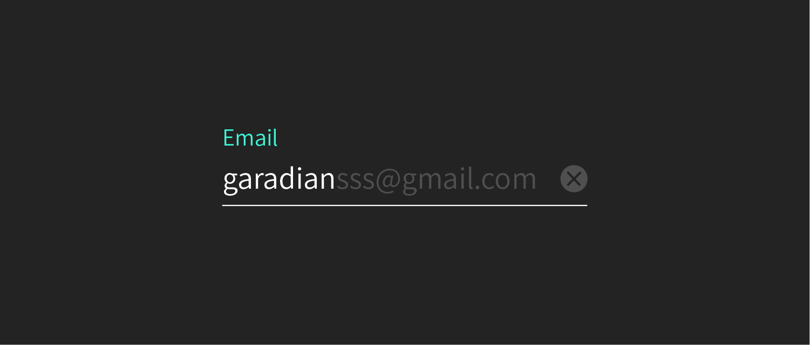

패턴
목적을 위해 컴포넌트가 결합되어 다양한 기능을 수행하는 규칙입니다. 패턴은 기기를 이용하는 사용자의 모든 맥락을 고려한 규칙을 만들어내는 것입니다. 패턴이 무엇이냐에 따라 페이지가 정해집니다.

종류
패턴은 상황과 환경에 따라 다르기 때문에 분류가 매우 어렵습니다.
메뉴 - 메뉴를 누르면 현재 페이지를 가리는 카드가 나타남다.
노티피케이션 -
오류가 났을 때 -
오프라인일 때 -
고르기
패턴의 경우 사용자가 컨트롤하는 방식과 상황 등 많은 조건들이 얽혀있습니다. 마우스와 키보드 , 손가락과 스타일러스 펜 등 도구에 의한 영향을 많이 받습니다.
만들기
사용자가 어떤 상황이며 최종 목적을 달성할 때까지 어떤 과정을 거치는지에 대한 구체적인 동선을 고려해야합니다. 검색을 예시로 들겟습니다.
검색
언제 어디서든 내가 가지고 있는 단서로 원하는 것을 찾는 기능입니다. 사용자가 자신이 찾고자 하는 정보 (나에게 필요한지 몰랐던 정보조차)를 찾을 수 있게 해줘야합니다. 기본 시나리오로 사용자는 텍스트 필드에 자신의 단서를 입력하고 서비스는 그에 대한 피드백을 줍니다. 입력-출력 만약 검색이 중요하다면 검색을 계속 할 수 있는 형태여야 합니다. 언제 어디서나 검색을 발견할 수 있어야합니다.
목적: 영화 찾기
방식: 사용자가 기억하는 단어로 찾기
형태: 텍스트 필드, 그리드 리스트
행동: 텍스트 입력, 스크롤, 터치
결과: 결과값 표시 -> 페이지 이동
재료 고르기
목적을 위해 컴포넌트가 결합되어 다양한 기능을 수행하는 규칙입니다. 패턴은 기기를 이용하는 사용자의 모든 맥락을 고려한 규칙을 만들어내는 것입니다. 패턴이 무엇이냐에 따라 페이지가 정해집니다.
형태 짜기
목적을 위해 컴포넌트가 결합되어 다양한 기능을 수행하는 규칙입니다. 패턴은 기기를 이용하는 사용자의 모든 맥락을 고려한 규칙을 만들어내는 것입니다. 패턴이 무엇이냐에 따라 페이지가 정해집니다.
동선 짜기
시나리오에 기반해 동선을 만듭니다. 패턴에서는 사용자가 정보를 이해하고 행동하는 과정에서 많은 변수가 있기 때문에 다 생각해줘야합니당. 검색하기 전 검색한 후를 나누어 각 단계별로 사용자의 상태를 이해하고 문제를 해결해줍니다.